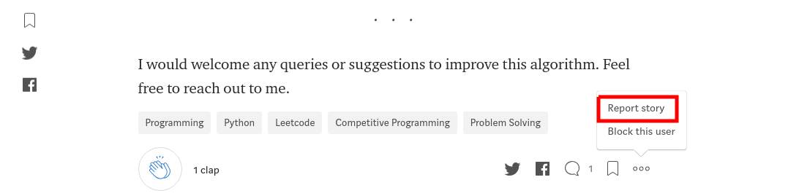

Versionamento de edições
| Data | Autor | Descrição | Versão |
|---|---|---|---|
| 16/06/2019 | Aline Laureano | Adição da estrutura da página e de algumas fotos das telas. | 1.0 |
| 17/06/2019 | Luís Cláudio T. Lima | Adição de mais fotos de telas | 1.1 |
| 19/06/2019 | Guilherme Marques Rosa | Adição de mais imagens de telas | 1.2 |
| 19/06/2019 | Guilherme Marques Rosa | Adição de mais imagens de telas | 1.3 |
Introdução
Objetivo
Resultados
O resultado está apresentado com imagens de como estão implantados os requisitos funcionais do Medium.
R005 - Visualizar data de publicação dos artigos
Foto 1:

Foto 2:
R010 - Criar nova 'serie'
Foto 1:

R012 - Visualizar 'serie'
Foto 1:
R013 - Salvar 'serie' como rascunho
Foto 1:

R014 - Editar 'serie'
Foto 1:

R026 - Comentar no corpo do texto da 'story'
Foto 1:

R028 - Seguir Escritores
Foto 1:

R030 - Receber notificações dos escritores seguidos
Foto 1:

R036 - Favoritar publicação
Foto 1:
R037 - Visualizar comentários da publicação
Foto 1:

R038 - Reportar publicação
Foto 1: 
R039 - Reportar usuário
Foto 1:

R040 - Editar informações de perfil
Foto 1:

R041 - Salvar/cancelar edição de perfil
Foto 1:

R044 - Visualizar "Claps" em stories
Foto 1:

R045 - Visualizar próprio perfil
Foto 1:

R047 - Visualizar marcações feitas
Foto 1:
R048 - Criar Publicação
Foto 1:

R049 - Visualizar rascunho de publicação
Foto 1:

R052 - Selecionar tópicos de interesse
Foto 1:
R053 - Deixar de seguir usuários
Foto 1:
R054 - Deixar de seguir publicações
Foto 1:

R057 - Editar email padrão
Foto 1:

R060 - Ativar/desativar boletim informativo
Foto 1:
R061 - Selecionar tema do boletim informativo
Foto 1:

R062 - Ativar/desativar recomendações de stories
Foto 1:

R063 - Ativar/desativar notificações por email
Foto 1:
R064 - Ativar/desativar notificações sociais
Foto 1:

R066 - Desativar menções de usuários
Foto 1:

R067 - Conectar com redes sociais
Foto 1:

R068 - Conectar com Google
Foto 1:
R069 - Mostrar links para facebook e twitter na página de perfil
Foto 1:
R073 - Fazer download de meus dados do MEDIUM
Foto 1:

R075 - Desativar Conta
Foto 1:

R076 - Deletar Conta
Foto 1: